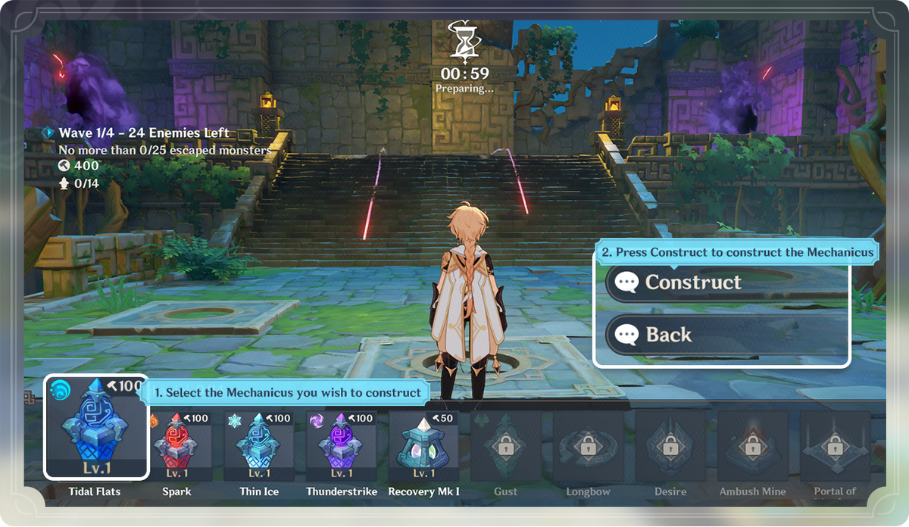
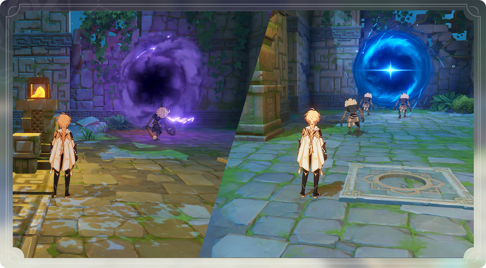

Праздник морских фонарей
10 февраля в Action/RPG Genshin Impact начинается ежегодное событие «Праздник морских фонарей», которое будет состоять из серии ивентов. Студия miHoYo поделилась детальной информацией о грядущих активностях с ценными наградами.
«Праздник морских фонарей» пройдет с 10 по 28 февраля.
Для того, чтобы принять участие в событии, вам необходимо иметь ранг приключений не меньше 23, завершить первый акт первой главы “Загадочная земля тысячи камней”, а также выполнить задание легенды персонажа Сяо “Златокрылая Птица. Глава I”, которое открывается после выполнения задания “Загадочная земля тысячи камней”.
Расписание:
Сюжетное задание “Откуда появились фонари”: 10 - 28 февраля
Сюжетное задание “Течения под фонарями”: 14 - 28 февраля
Сюжетное задание “Свет фонарей над морем”: 18 - 28 февраля
Период события «Останься со мной»: 10 февраля - 7 марта
Период события «Театр Механикус»: 10 - 28 февраля
Период события «Ночной рынок»:
Ночной рынок I: 10 февраля - 7 марта
Ночной рынок II: 14 февраля - 7 марта
Ночной рынок III: 18 февраля - 7 марта
«Праздник морских фонарей» пройдет в 4 этапа и не будет требовать первородной смолы. Выполнение сюжетных заданий события позволит получить камни истока, опыт героя и мору. Посмотреть их прогресс можно в меню события или “Задания”.
Истории Праздника морских фонарей
Ивент состоит из 3 этапов. Выполнение сюжетных заданий “Откуда появились фонари” откроет доступ к активности «Истории Праздника морских фонарей», в ходе которой игрокам предстоит выполнить просьбы жителей. В качестве награды за это предусмотрены камни истока, мора и “Праздничная жара”.
Накопив достаточное количество “Праздничной жары” игроки смогут разблокировать доступ к следующим заданиям и этапам события.
Театр Механикус
Для участия в испытании «Театр Механикус» нужно завершить задания «Откуда появились фонари» и «Ли Юэ: Театр Механикус». Данное событие состоит из 6 этапов и 8 уровней сложности. Более высокий этап будет увеличивать максимальный уровень Механикусов Венефикус и лимит накапливаемых печатей Венефикус, а высокая сложность позволит получить больше наград.
Каждая игра в событии стоит 1 небесный фонарь. При этом нету разницы, завершилась она победой или поражением. Перед началом можно выбрать режим: одиночный или совместный для 2 игроков. Суть активности довольно простая - не дать противникам добраться к выходу. Игра будет состоять из нескольких раундов с этапами строительства и боя. Во время строительства необходимо спланировать тактику и построить Механикусов на пути монстров. Строительство башен расходует очки Венефикус. Какое-то количество очков доступно в начале игры, остальные можно получить за убийство врагов. Также часть очков Венефикус возвращается при разборе уже построенных Механикусов. В совместном режиме максимальное количество башен имеет общий лимит.
На втором этапе игрокам предстоит сразиться с монстрами, которые будут двигаться по определенному маршруту от фиолетового портала к синему. Атаковать персонажами их нельзя, как и враги не могут напасть на игроков. Однако на монстров действуют эффекты элементальных навыков. Кроме того, на уровнях можно использовать интерактивные механизмы, которые помогут в бою.
Если количество сбежавших монстров не превысит допустимого значения, испытание завершится победой и принесет какое-то количество “печатей Венефикус”, которые необходимы для открытия и улучшения Механикуса Венефикус. Также после завершения этапа боя каждого раунда можно выбрать эффект “мистическое искусство уровня”. Он позволит получить дополнительные очки Венефикус, усилить башни, увеличить лимит строительства или сложность раунда с наградами.
Открытие новых Механикусов или улучшение имеющихся доступно в оружейной. Стоит учесть, что разные виды башен обладают уникальными свойствами.